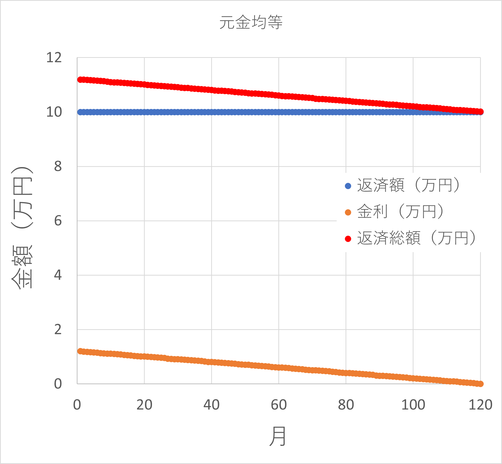

ローン計算-03 金利の総額
では，それぞれの金利の総額を計算してみましょう．
・元金均等
金利は，
\( \Large s \cdot \left( 1-\frac{n-1}{m} \right) \cdot x \)
となります．これの合計ですから，
\( \Large \displaystyle \sum_{i=1}^{m} sx \cdot \left( 1-\frac{i-1}{m} \right) \)
です，整理すると，
\( \Large sx \displaystyle \sum_{i=1}^{m} \frac{m-i+1}{m} = sx(m+1) -\frac{sx}{m} \displaystyle \sum_{i=1}^{m} i \)
これは簡単に計算できて，
\( \Large \frac{sx(m+1)}{2} \)

と金利金額は直線的に減少していくことがわかります．
・元利均等
金利は，
nヶ月 ： \( \Large sx \frac{ (1+x)^{m}-( 1+x )^{n-1}}{(1+x)^{m}-1} \)
となりますので，ｎを１からｍまで足せばいいわけです．
nヶ月 ： \( \Large sx \frac{ (1+x)^{m}-( 1+x )^{n-1}}{(1+x)^{m}-1} = \frac{ sx}{(1+x)^{m}-1} \left[(1+x)^{m}-( 1+x )^{n-1} \right] \)
として，総金利は，なじみ等比数列を用いて
\( \begin{eqnarray} \Large && \displaystyle \sum_{i=1}^{m-1} \frac{ sx}{(1+x)^{m}-1} \left[(1+x)^{m}-( 1+x )^{i-1} \right] \\
&=& \frac{ sx}{(1+x)^{m}-1} \left[ m (1+x)^{m} - \displaystyle \sum_{i=1}^{m-1} ( 1+x )^{i-1} \right]\\
&=& \frac{ sx}{(1+x)^{m}-1} \left[ m (1+x)^{m} - \frac{(1+x)^m-1}{x} \right]\\
&=& sx \left[ \frac{ m (1+x)^{m}}{(1+x)^{m}-1} - \frac{1}{x} \right]\\
\end{eqnarray} \)
と計算することができます．
式からはわかりませんが．金利金額はほぼ直線的に減少していくことがわかります．
実際の計算
実査に計算してみましょう．
金利（年）：1.2％ (=0.1%/month)
借入金：1200万円
期間（年）：10年 (=120ヶ月）
として計算してみると，
元金均等 ： 72.60 万円
元利均等 ： 74.04 万円
と若干，元金均等が安くなることがわかります（いつもこうなるかはわかりませんが．．．）
次に，リボ払い，について計算してみます．